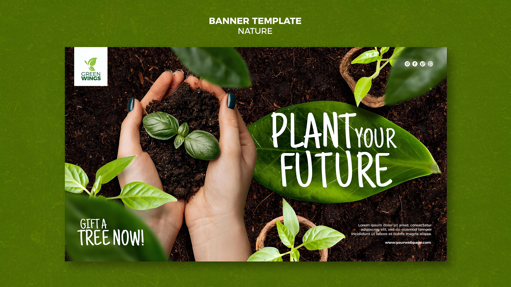
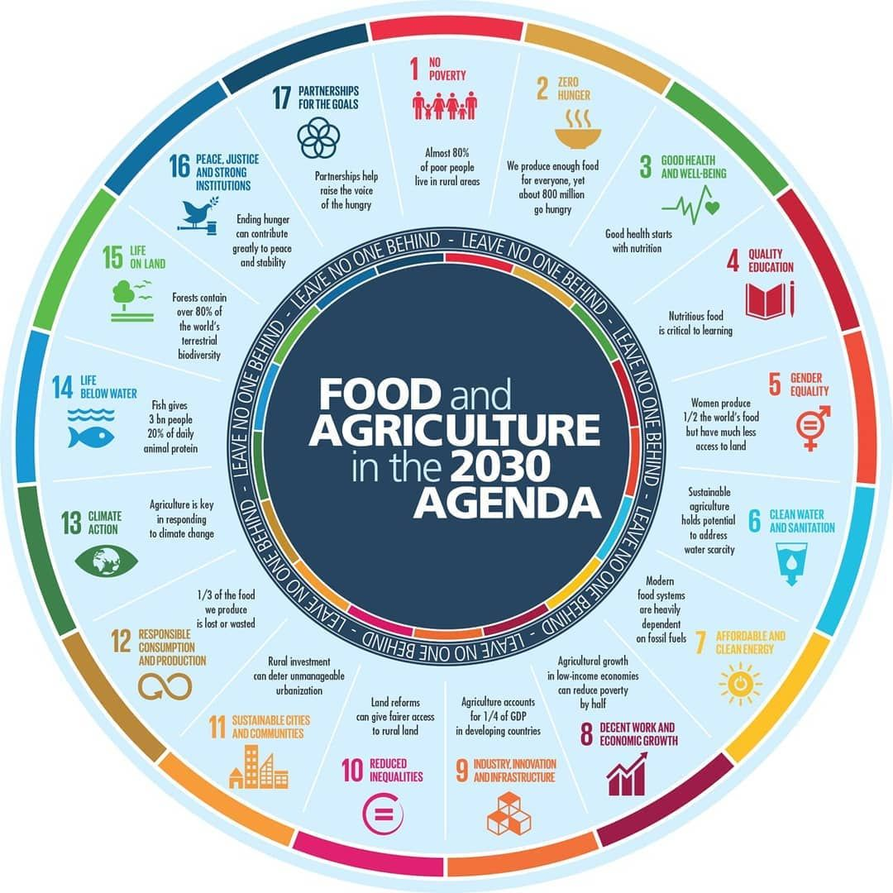

Why we need Sustainable Agriculture Planning ?
Sustainable agriculture planning is essential to address the urgent challenges
facing our planet. It ensures the responsible stewardship of natural resources
by promoting practices that preserve soil health, safeguard water quality, and
protect biodiversity. By
mitigating the environmental impact of farming
through reduced chemical inputs, sustainable agriculture contributes to
climate change mitigation and adaptation.

Planning Sustainable Goals for Future Reserve
What We can do to save our Agriculture ?
Saving agriculture requires collective efforts and individual actions.
Firstly, consumers can make a significant impact by choosing locally
sourced, sustainably produced foods and supporting farmers who
prioritize environmentally friendly practices. Adopting a plant-based
diet or reducing meat consumption can also alleviate the environmental
strain associated with livestock farming. Additionally, individuals can
advocate for and participate in community-supported agriculture
programs, strengthening the connection between farmers and
consumers.